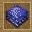
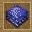

征服美洲大中華區遊戲平台
征服美洲大中華區遊戲平台
地圖編輯器

一、編輯器介面
首先你因該瞭解你將要使用的地圖編輯器的介面。在螢幕的左邊，你會看到一個有一組按鈕的工具箱欄。這上面的按鈕能讓你在不同的編輯模式之間轉換（例如編輯水面、樹木等等）。點擊這個按鈕可以關閉所有的編輯模式。如果所有的編輯模式都已關閉，你就可以控制士兵攻擊敵人、建造建造等等。在編輯器裡就會和在遊戲中一樣。
在工具箱欄靠下部分的按鈕可以讓你在各種菜單與編輯器之間切換。
在螢幕右上方部分是一個有許多不同顏色的方塊的工具選項欄，這就是顯示不同編輯模式的編輯資訊的地方。
1、 左工具箱欄
2、 通過按鈕突出顯示確定選擇了該模式
3、 右工具選項欄
4、 上捲動條（在水邊編輯模式中定義水面的半徑）
5、 下捲動條（在水邊編輯模式中定義海岸、河岸的寬度）
6、 選擇不同的國家按鈕
7、 筆刷半徑（表明將要改變的地形的尺寸）
8、 指示海岸的寬度（在編輯水面模式中）
9、 小地圖
使用快捷鍵“F12”，可以打開編輯器裡的“遊戲菜單”，在“遊戲菜單”裡，你可以保存或者加載地圖、更改遊戲設定或者返回遊戲主菜單。
使用快捷鍵“F11”，可以截取遊戲畫面，被截取的畫面將被保存為“screenX.bmp”（“X”是截屏的號碼數，如果你截屏次數增加“X”將隨之增加）。
二、創建地形
通常，創建一個地圖的第一階段是創建一個地形。這一步驟要決定在什麼地方要有山脈、高原或山丘，哪裡有廣闊的海洋或河流，還有那些蜿蜒的道路。（這一步比較容易，你可以在螢幕畫紙上描繪你的地圖的概況）。當你完成這一步後，點擊左工具欄上的這個按鈕，將打開一個新的視窗，你可以使用它給你的地圖加入新的景觀元素。

左鍵點擊增加地形到地圖，右鍵點擊則刪除地形。
點擊這個按鈕 增加山到地圖上，這些山在地圖上標記為白色。點擊這個按鈕添加水到地圖上，水被標記為藍色。
增加山到地圖上，這些山在地圖上標記為白色。點擊這個按鈕添加水到地圖上，水被標記為藍色。
這個按鈕能幫你添加平坦地帶到地圖上，大多是添加到山脈（即白色部分）的邊緣，之後就能創造一條傾斜的道路，這樣，你的士兵就能到達地圖上的高原地帶。平坦地帶被標記為紅色。
使用上捲動條可以改變這些地形的大小。
你可以使用這個按鈕添加森林，即標記為綠色的地方。下滾動條可以調節森林的密度。
點擊這個按鈕可以改變山的高度。將你的鼠標指向白色的山，然後點擊按住鼠標右鍵，白色地區將慢慢變暗，顏色越暗，高度就越低。調節下滾動條可以改變範圍大小。
這個按鈕可以讓你撤銷你的編輯。
點擊“保存計位圖”可以保存這張地圖的畫紙，可以創建一張圖片。點擊“加載計位圖”，可以加載一張之前保存的計位圖。點擊“生成”則可以在你的編輯器裡按照畫板上的設定生成一張地圖。
注意：生成地圖時將刪除原地圖上的所有地形地貌、單位建築。如果你不想生成一張地圖，請點擊“取消”按鈕。
三、立體地形編輯
現在，基本地形已經被你創建了，現在是時候改變地圖立體地形了。使用編輯器左工具箱欄，你可以創造陡峭的山崖、傾斜的山丘、小小的溝壑或者深不可測的坑。
這個按鈕可以開啟高山海拔轉變模式，如果你想改變某個地方的海拔高度，將你的鼠標移到那裡，按住鼠標左鍵可以使這片區域海拔升高，按住鼠標右鍵可以使海拔降低。按住鼠標左鍵或右鍵然後流暢地移動光標就可以創造一個峽穀或者山脈。在螢幕右上方的工具選項欄裡有一個滾動條，你可以用它來改變畫筆的半徑。
另外一個平原海拔轉變模式是點擊這個按鈕。這個模式與剛才那個模式不同的是這個模式可以建立一塊平坦的高地。
這個按鈕可以開啟平坦模式。將你的鼠標移到你想平坦的地區，然後點擊鼠標左鍵，然後畫筆所刷過的所有地區將會轉變成與鼠標中心點同高的均勻平坦地帶。在這個模式中，你可以點擊鼠標右鍵添加隨機不規則地形到地圖上。按住鼠標右鍵你可以看到筆刷掃過的區域被一些小山坡所取代。
平滑模式通過這個按鈕打開，可以讓這個地區更自然。平滑模式可以讓你去除地圖上太過於陡峭的棱角。將鼠標移到一個你想讓它平滑的地區然後點擊鼠標左鍵，這個地區就會逐漸的變平滑。在這個模式下按住鼠標右鍵可以在山坡上創造峭壁。
這個按鈕開啟編輯線狀地形模式。在你想改變的地區邊緣點擊鼠標左鍵，隨著你的鼠標移動，一條黃色的線將從你點擊鼠標的地方延伸。通過再次點擊鼠標左鍵，你可以讓黃線繞你希望的範圍一個圈。通過將黃線圍城一個封閉的圈或者點擊鼠標右鍵來使選擇區域過程結束，結束後，一個對話框將顯示在桌面上：
Cublic——依照黃線創建斜坡，你可以在下方的框中指定高度；
Squad——依照黃線創建陡峭的山坡，你可以在下方的框中指定高度；
Smooth——依照黃線創建平坦的地區；
Road1、Road2、Road3——依照黃線創建三種不同的道路。
你也可以通過點擊按個按鈕 來使用一個更加方便的模式來編輯地貌。一個顯示地圖地形海拔高度的小畫板（黑色地帶海拔為0，越亮的地方海拔越高）將顯示在螢幕上。右邊的滾動條能讓你調節海拔高度。
來使用一個更加方便的模式來編輯地貌。一個顯示地圖地形海拔高度的小畫板（黑色地帶海拔為0，越亮的地方海拔越高）將顯示在螢幕上。右邊的滾動條能讓你調節海拔高度。

突起的高度——定義山的高度
突起的半徑——定義畫筆的半徑大小
交叉口的寬度——定義斜坡的長度
突山端的數量——定義突出部分的數量
突山端的深度——定義突出部分的深度
缺口的梯度——山的階梯度
右下角的按鈕被分為幾個部分：
突山端的類型——定義斜坡的類型。你可以在提供的斜坡類型中做出選擇。
——常規形狀
——凹面形狀
 ——凸面形狀
——凸面形狀
——錐形
 ——不規則形狀
——不規則形狀
壓力類型——定義高地上層外貿
 ——陡峭的山頂
——陡峭的山頂
 ——光滑的
——光滑的
 ——傾斜光滑的
——傾斜光滑的
——平滑下降的
筆刷外形——定義高地的形狀
——平滑的
——不規則的
高度
——測量畫板上地形的海拔高度
完成了設置後，左鍵點擊畫板上你想要修改的區域，你會看到畫板上你的鼠標點擊的地方改變了顏色。你的鼠標就像筆刷，你可以在地圖上創造山脈或者各種各樣的山。點擊“生成”就可以在地圖上完成你設置的地形。你可以使用編輯地形的按鈕來優化你的地圖，這樣，這些山就會很快的被修改。如果你想取消你的修改，點擊“取消”按鈕就行了。
四、水面編輯
如果你想在地圖上添加一些水面，你可以使用水面編輯按鈕。
點擊這個按鈕 打開水面編輯模式。兩個滾動條將會顯示在螢幕右上方。使用上面的滾動條，你可以改變筆刷的半徑，使用下面的滾動條你可以改變海岸（河岸）的寬度。在你想要生成水的地方按左鍵，你就能得到水面。
打開水面編輯模式。兩個滾動條將會顯示在螢幕右上方。使用上面的滾動條，你可以改變筆刷的半徑，使用下面的滾動條你可以改變海岸（河岸）的寬度。在你想要生成水的地方按左鍵，你就能得到水面。
請確保你要生成水面的地方是平的並且不要讓它浸沒建築。
點擊這個按鈕刪除水面。在這種模式下，如果你用鼠標左鍵點擊水面，水面移除。
手動創建一片水面時，由於缺乏光線反射，看起來很不自然。亮度和尺寸可以在螢幕右邊的工具選項欄裡調節。點擊這個按鈕開啟波浪模式，左鍵點擊水面可以在你想要的地方創建一些海浪和波浪。
你可以通過點擊這個按鈕開啟刪除波浪模式。這種模式下，左鍵點擊水面會刪除鼠標筆刷之下所有的水面波浪。你可以在螢幕右邊的工具選項欄調整滑鼠畫筆大小。
如果你需要創建水流，你可以使用水流編輯模式。點擊這個按鈕，你會看見螢幕上出現黑色的網格。你可以在每一個方格裡指定水流的方向。選擇一個方格，在水面上你想要水流的方向點擊一下，一個指向你選擇的方向箭頭將出現在你選擇的那個方格裡。點擊鼠標左鍵，你可以將箭頭移向任何方向。在方格裡點擊鼠標右鍵，你可以刪除這個方格裡的水流。
注意：水流編輯模式不僅僅適用於海面，對其他水面也適用。

1、 設置水流的箭頭
五、使用地面紋理
現在你已經創造了水面和高地，是時候用不同的地貌紋理創造地面了。讓山谷裡長滿了青草，讓山坡上有石頭，讓戈壁上有黃沙。一個逼真的紋理創建模式允許你創造你想要的世界。
單擊這個按鈕激活紋理模式。在屏幕右邊工具欄的下部，你可以看見一個選擇不同紋理的區域。你可以選擇任何一種紋理來編輯你的地面。
為了用一個新的紋理覆蓋一個區域，左鍵點擊你想修改的這個區域。左鍵點擊地圖，你的鼠標畫筆劃過的地方將會顯現你選擇的紋理。使用屏幕右邊的滾動條你可以改變鼠標畫筆的大小。如果你想獲得一個混合的紋理，你可以通過按住鍵盤上的“Ctrl”來選取幾種紋理。當你按住“Ctrl”鍵點擊紋理的時候，會有數字顯示在你選擇的紋理上。這些數字意味著這個紋理在你生成紋理過程中的概率。通過多次點擊這個紋理，你可以增大這種紋理顯示的概率。你可以通過在紋理選擇框點擊鼠標右鍵減少出現這種紋理的概率。設置完所有的紋理，以及紋理出現的概率之後，你可以在地圖上畫出紋理了。為了保存你設置的紋理，你可以使用專門的紋理保存欄。如果你想要你設置的紋理在下次使用，你可以把任何分配的紋理結果保存起來。
紋理設置模式可以讓你快速地將需要的地區用該紋理填充。設置最大和最小的高度可以讓你用紋理覆蓋地圖上所有高度不同的地區（例如山脈），地圖上的紋理不再適用，通過設置別的屬性，你可以將你想要的紋理填滿地圖上的所有角落。
如果你想用一個紋理填充一片複雜地區，在你點擊鼠標左鍵的時候，按住鍵盤上的“Shift”鍵。光標會變成一條線，你可以用這條線環繞住你想改變地面紋理的地區。再次按住“Shift”鍵點擊鼠標左鍵，你將在圍繞的地區中填滿你要的紋理。
有時候高山會 遮擋住你想填充地區的視線， 在這種時候，你可以使用2D模式。點擊這個按鈕讓地圖上所有的山變平坦，這時，你就可以自由地修改剛才被遮住的地區了。再次點擊這個按鈕將使山和高地回复原來的面貌。
1、 選擇一個或幾個相應的紋理
2、 點擊鼠標，就能改變地面
六、地面結構模式
要創造逼真的風景地貌，你可以選擇用這種模式來創建。點擊這個按鈕進入地面結構模式。在右邊的選項欄裡會有很多種地面結構供挑選。你可以使用滾動條來選擇其他的結構。
在地圖上點擊鼠標左鍵，就可以使鼠標畫筆掃過的區域填滿你選擇的地面結構。你可以用選項欄的上滾動條調節鼠標畫筆的大小。下滾動條可以調節地面結構的清晰程度。
當你創建一張地圖的時候，你可以精確選擇你想要的地面結構來完善你的地圖。之後，按住鼠標左鍵，使用鍵盤上的方向鍵，可以移動鼠標畫筆下面的圖案。
七、陰影模式
你可以使用陰影繪圖模式使地圖上你需要的地方變暗。點擊這個按鈕開啟陰影模式。使用屏幕右邊的上滾動條，你可以設置陰影畫筆的大小。下滾動條可以用來調整陰影的亮度。在地圖上點擊左鍵，你就可以在你鼠標刷過的地方畫出一個與你設置好的參數相同的陰影。在這個模式下點擊鼠標右鍵會擦出你畫的陰影。
八、放置自然物體
設置地面紋理之後，你需要在地圖上放置自然物體。這些東西是你在遊戲過程中的資源來源。
樹木可以通過點擊這個按鈕被種在地圖上。在屏幕右邊的選項欄上，很多種樹的圖片被展示。選擇一種你想要的樹，然後在地圖上點擊鼠標左鍵。如果你想在地圖上種植不同種類的樹，你可以通過按住鍵盤上的“Ctrl”鍵選擇幾種樹。被挑選出來的樹將會被建立在地圖上。如果你想取消選中樹，在那個樹的圖片上點擊右鍵即可。在地圖的不同地方點擊鼠標左鍵，你就能得到樹木。地圖上被你的鼠標筆刷劃過的地方將會充滿樹。鼠標畫筆的尺寸可以通過屏幕右邊的選項欄上的滾動條調節。
點擊這個按鈕開啟石頭模式。在屏幕右邊的選項欄下半部分會顯示不同種的石頭的圖片。選擇一種石頭在地圖上點擊左鍵即可安放這些石頭。如果你想在地圖上安放不同種類的石頭，你可以通過按住鍵盤上的“Ctrl”鍵選擇幾種石頭。被挑選出來的石頭將會被安放在地圖上。如果你想取消選中的石頭，在那個石頭的圖片上點擊右鍵即可。在地圖的不同地方點擊鼠標左鍵，你就能得到石頭。鼠標畫筆的尺寸可以通過屏幕右邊的選項欄上的滾動條調節。
注意：這個遊戲不是為了安放大量的石頭的，這意味著若地圖上有數量過多的石頭會導致意外的後果。
1、 添加石頭是輕而易舉的事情
2、 添加作為資源的礦井也很簡單
點擊這個按鈕開啟清除樹和石頭模式，你可以清除不需要的樹、石頭或者礦井。將鼠標移到你想要清除的物體上，然後點擊鼠標左鍵。你的鼠標筆刷掃過的地區內所有的自然物體都將會被清除。鼠標畫筆的尺寸可以通過屏幕右邊的選項欄上的滾動條調節。
除了通過上面兩種模式放置自然物體外，你還可以運用現成的地形。地形庫裡面有許多現成的地形——丘陵、森林、高山、峽谷等等。點擊這個按鈕開啟粘貼地形模式。在屏幕右邊的選項欄下半部分會顯示一個現成地形清單。點擊其中的一個然後你會在地圖上看到它的圖像隨著你的鼠標移動。選擇一個你需要的地形，再在地圖上選擇一個你需要的地方，點擊鼠標左鍵。
九、設置溪流和瀑布
點擊“F5”開啟設置溪流和瀑布模式。

在屏幕右邊的選項欄顏色（玩家）選擇欄之下，是一個調節鼠標畫筆半徑滾動條。在滾動條下面，是一個下拉菜單，你可以在菜單欄選擇5種不同的溪流或瀑布形式。選擇一種溪流或瀑布之後，在選項欄下面會出現它的圖片。在圖片的周圍，你可以看見一圈淡綠色的小方塊，選擇一個小方塊，你就指定了小溪和瀑布的方向。將鼠標移動到地圖上點擊左鍵，你就能得到相應的小溪或者溪流。轉動鼠標滑輪可以調整溪流的方向。

1、 選擇一個設定方向的小方塊。
你可以用編輯樹或石頭模式來修飾你的小溪或者瀑布，使其更加逼真。在清除樹或石頭模式中，你可以清除小溪或瀑布。
注意：這種方式放置的小溪不能行船，但是可以讓可移動單位通過。
十、不可到達模式
你的地圖已經被創建得差不多了，你可以準備進行遊戲了。對於任何一張地圖來說，地圖上可以到達的地區是非常重要的，這一章節將會教你如何改變地圖上的可到達地區。首先，點擊這個按鈕，它可以讓你調整地圖上可到達的地區，因此，你可以讓不可到達的地區變成可以到達地區。
點擊這個按鈕可以打開添加阻礙地區模式。在這種模式下，用鼠標左鍵點擊地圖上的區域，可以使該地區變為不可通行地區（被標記為黑色的十字）。
點擊這個按鈕開啟暢通模式。在這種模式下，用鼠標左鍵點擊地圖上的區域，可以使該地區變為可通行地區（被標記為咖啡色的十字）。點擊這個按鈕可以開啟默認阻礙模式。在這種模式下，用鼠標左鍵點擊地圖上的區域，可以使該地區變為可通行地區或者不可通行地區（標記為黑色或者咖啡色的十字被刪除）。
當你在編輯可到達地區的時候，要避免設置一些狹窄的通道，士兵可能會在這裡被卡住或者在這裡打轉。如果你已經創建了一些狹窄的走道，請在用旗幟標記一條你的士兵容易通過的道路（旗幟在編輯樹模式裡，詳情請看第五章節）。十字和旗幟是用來編輯的，它們在遊戲中將不會被顯示。

1、 創建無法到達地區
2、 這個光標顯示下一個無法到達地區的位置
十一、放置單位 遊戲開始
一旦可接近的地區被建立，這張地圖就已經為玩遊戲做好了準備。剩下的事情就是放置單位人口在地圖上。在這個編輯器裡，你可以創建簡單的給每一個玩家分配農民、建築、堡壘或者很多的軍隊的起始模式。
點擊這個按鈕開啟放置單位模式。在右邊的選項欄裡選擇一種顏色，即放置的單位屬於操作這種顏色的玩家。在顏色選項欄的下面是一個可以選擇不同民族的單位的下拉菜單。再下面是一個單位和建築清單。從這個清單裡選擇一個單位或者建築在它的圖標上點擊鼠標左鍵，這個圖標將會被選中。之後，在地圖上任何你想要的地方點擊鼠標左鍵，你選擇的單位就將被放置在那裡。一個或幾個單位被放置之後，繼續點擊鼠標，每一次你點擊的時候這個單位就會出現在你點擊的那個點上。

1、 在這裡可以找到需要的單位或建築
2、 將單位放置在地圖上
如果你點擊的時候並沒有出現單位或者建築，請查看你是否有足夠的資源來創造這個單位或建築（如果沒有足夠的資源，請使用“babki”作弊代碼）。當地圖表面不規則或有別的單位或物體時（例如石頭、礦井、別的建築等等），建築將不會被安置在那裡。在編輯器裡，這個道理就和在遊戲中用農民建造建築是一樣的。
若放置建築的位置不滿意，可以隨機移動它。選中這個建築，然後通過鍵盤上的方向鍵 “↑” “↓” “←” “→” 來進行移動。通過這個方式，可以將建築移到地圖上的任何地方，無論是否有障礙物或地形起伏過大。
如果你需要把幾個不同顏色（玩家）的單位放置到很近的地方，你應該通過點擊這個按鈕打開和平模式。如果你忽略了這一步，這些不同顏色的單位將會互相攻擊。再次點擊這個按鈕將會關閉和平模式。當你要在遊戲中加載這張地圖時，在你製作地圖的時候就要打開和平模式。
除了放置一些單位外，你也要設置遊戲初始資源。點擊這個按鈕打開資源設置菜單。在這裡，你可以為每一位遊戲玩家分配遊戲初始資源。但這張地圖在編輯器裡被加載的時候，默認的初始資源已經被設置好了。

如果你想創建一張與電腦對戰的地圖，請確保一下幾點已經完成：
1、農民必須被放置在地圖上，他們的位置將被電腦作為一個起始位置；
2、農民放置的地方要較為空曠，以便讓電腦有足夠的空間建造建築；
3、起始位置附近應該要有樹木、石礦，至少有一個鐵礦和金礦。最好每一種礦井有兩個。
注意：電腦在狹窄的地帶會發展很慢，不要在地圖上創造狹窄的過道。為了讓電腦正常發展，開始的時候你應該給它足夠的資源（約5000左右）。
十二、編輯器裡的快捷鍵
Ctrl+O–顯示/關閉選項欄
Ctrl+T–顯示/關閉工具欄
M–切換小地圖模式
圈住一片地區然後按Ctrl+C–儲存地形
Ctrl+V–插入儲存或現成的地形
S–在添加阻礙地區模式、啟暢通模式、默認阻礙模式之間轉換
V–開啟地面結構模式
N–進入刪除樹和石頭模式
H–整張地圖截圖（保存在遊戲目錄下）
C–開啟水面模式(Ctrl+(1-9)–設置河岸/海岸寬度)
F2–開啟紋理模式(按住“Ctrl”然後點擊紋理，可以一次選擇多個不同的紋理)
F4–開啟石頭模式
F5–開啟設置水流模式
F6–開啟編輯地貌模式
F7–切換2D/3D
F8–編輯樹模式
1-9–設置鼠標畫筆的半徑
留言板